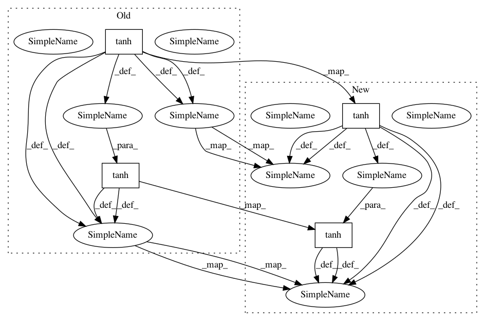

62c1498bc9d1cedbff6630dc1b2d99b1d9ec940d,modules.py,location_network,forward,#location_network#,360
Before Change
return x
def forward(self, h_t):
mu = F.tanh(self.fc(h_t))
l_t = F.tanh(self.gaussian(mu))
return mu, l_t
After Change
return x
def forward(self, h_t):
mu = F.tanh(self.fc(h_t)).detach()
l_t = F.tanh(self.gaussian(mu)).detach()
return mu, l_t
In pattern: SUPERPATTERN
Frequency: 4
Non-data size: 4
Instances
Project Name: kevinzakka/recurrent-visual-attention
Commit Name: 62c1498bc9d1cedbff6630dc1b2d99b1d9ec940d
Time: 2018-01-22
Author: kevinarmandzakka@gmail.com
File Name: modules.py
Class Name: location_network
Method Name: forward
Project Name: maciejkula/spotlight
Commit Name: 2767c948afa434f863df3b5eb1946a032dfba588
Time: 2017-07-13
Author: maciej.kula@gmail.com
File Name: spotlight/sequence/representations.py
Class Name: CNNNet
Method Name: user_representation
Project Name: kevinzakka/recurrent-visual-attention
Commit Name: acd700c91be5018ed1a8f189e4585b92288aad4d
Time: 2018-01-23
Author: kevinarmandzakka@gmail.com
File Name: modules.py
Class Name: location_network
Method Name: forward
Project Name: kevinzakka/recurrent-visual-attention
Commit Name: f466871be6ee80533c997cf6c958aa41a697936f
Time: 2018-01-22
Author: kevinarmandzakka@gmail.com
File Name: modules.py
Class Name: location_network
Method Name: forward